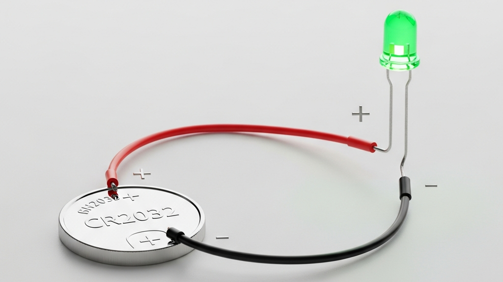
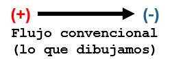
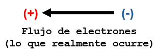
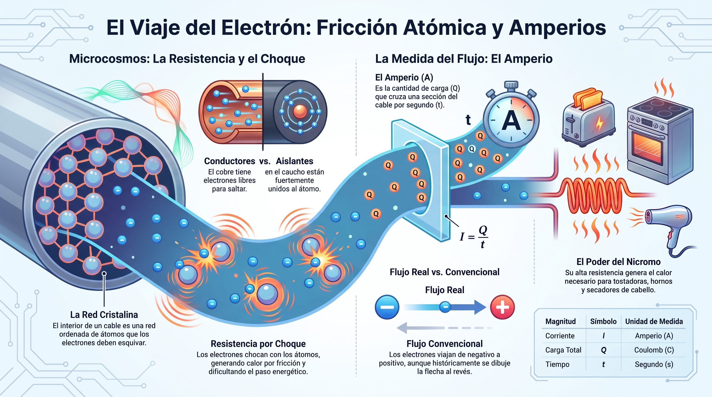

🧱 Fricción atómica y amperios
🧱 La red cristalina y los choques atómicos
El interior de un cable de cobre no es un tubo vacío. Es una red cristalina ordenada de átomos. Cuando la batería empuja a los electrones, estos no avanzan en línea recta: van esquivando y chocando contra los átomos del metal.
💡 Resistencia por choque: a mayor número de choques dentro del material, mayor es la resistencia que se opone al paso de la energía, generando calor por fricción atómica.
Ese calor no es un detalle menor: es la razón por la que un componente electrónico se calienta cuando trabaja mucho. Y también es la razón por la que los cables de una ciudad no pueden ser infinitamente delgados.
¿Por qué el cobre conduce y el caucho no? En los metales como el cobre, algunos electrones están libres dentro de la red cristalina: pueden saltar de átomo en átomo. En los aislantes como el caucho, el vidrio o el plástico, los electrones están fuertemente unidos a sus átomos y no pueden desplazarse. Por eso el cobre deja pasar la carga y el caucho la bloquea. Este contraste será clave cuando construyas tu electroscopio.
⏱️ La medida de la corriente: el amperio (A)
En este nivel definimos la corriente eléctrica (I) como la cantidad de carga (Q) que cruza una sección del cable en un tiempo determinado (t):
- I (corriente): se mide en amperios (A).
- Q (carga total): paquete de electrones que transitan.
- t (tiempo): medido en segundos (s).
🔎 Ejemplo simple: si por un punto del cable cruza 1 coulomb de carga en 1 segundo, entonces la corriente es de 1 amperio. Un LED típico consume alrededor de 0.02 amperios (20 miliamperios).
Cada electrón aporta una cantidad mínima de carga, siempre la misma. No importa de qué material sea el cable: la carga del electrón es una constante del universo. Eso significa que la corriente se puede contar: es la suma de muchísimos electrones cruzando por segundo.

🧭 ¿Hacia dónde viaja la corriente?
Los electrones, físicamente, viajan del polo negativo al positivo. Pero por convención histórica, dibujamos la flecha al revés.
¿Por qué esa contradicción? Cuando Benjamin Franklin propuso la primera convención (siglo XVIII), todavía no se había descubierto el electrón. Franklin eligió el sentido positivo → negativo como referencia, y los ingenieros lo mantuvieron porque ya todos los planos del mundo estaban dibujados así. Hoy seguimos esa convención por costumbre y claridad.


💻 Laboratorio virtual: PhET "Resistencia en un alambre"
Abre la simulación "Resistencia en un alambre" de PhET y observa los puntos negros dentro del alambre: representan impurezas de la red cristalina. A mayor número de puntos, más choques posibles entre electrones y átomos.
🔎 De la idea al nombre: en la primera sección viste que los choques generan resistencia. Ahora pongámosle nombre preciso a esas magnitudes.
- La resistividad es una propiedad del material: el cobre tiene baja resistividad; el nicromo, alta.
- La resistencia es una propiedad del objeto: depende del material, pero también del largo y del grosor del alambre.
En la simulación vas a poder cambiar las tres cosas por separado.
🔥 ¿Para qué se usa el nicromo? Precisamente por su alta resistividad, el nicromo se usa en resistencias de calefacción: tostadoras, hornos eléctricos, secadores de cabello, calentadores de ambiente. En todos ellos la idea es la misma que viste en la primera sección: la corriente choca mucho contra los átomos del material y libera calor útil. También se usa en el hilo caliente de los cortadores de icopor y en las resistencias de frenado de trenes eléctricos.
Se abre en una pestaña nueva. Disponible en español y en otros idiomas.
- Aumenta la resistividad y observa qué ocurre con los choques.
- Cambia el grosor (área) y el largo del alambre. ¿Cuándo hay más espacio para que los electrones esquiven los obstáculos?
- Anota en tu bitácora: ¿Por qué un alambre más delgado y más largo ofrece más "fricción" al paso de la corriente?
Nota: esta simulación muestra el fenómeno de los choques. La medición exacta de cuánta carga fluye por segundo (amperios) la calculamos con la fórmula I = Q / t.
🔬 Taller de Cargas: Construye tu propio electroscopio
En este nivel ya sabemos que la materia está hecha de átomos, y que los electrones son las partículas que se mueven. Ahora vamos a verlos en acción a través de un detector muy simple.
🧰 Materiales
- Frasco de vidrio transparente y seco, con tapa.
- Alambre de cobre grueso o clip metálico estirado.
- Un trozo pequeño de caucho, goma o corcho para hacer el aislante.
- Papel aluminio.
- Un globo o tubo de plástico.
🛠️ Construcción paso a paso
Observa el diagrama: cada parte del electroscopio tiene una función. Fíjate especialmente en dos piezas clave: el aislante de caucho y el gancho del alambre.
- Haz un orificio en el centro de la tapa.
- Coloca el aislante de caucho alrededor del alambre, justo donde va a atravesar la tapa. Sin él, los electrones que llegan desde la esfera podrían escaparse por la tapa metálica antes de llegar a las láminas, y el electroscopio perdería sensibilidad.
- Atraviesa el alambre (ya con el aislante) por el orificio de la tapa: una punta afuera, otra dentro del frasco.
- Con la punta de adentro del alambre, forma un pequeño gancho.
- En la punta de afuera, pon una esfera pequeña de aluminio.
- Del gancho, cuelga dos láminas delgadas de aluminio, una al lado de la otra, sin que se toquen.
- Cierra el frasco.
🔍 El experimento
- Frota el globo contra tu cabello durante unos segundos. Al hacerlo, le estás arrebatando electrones al cabello: el globo queda cargado negativamente y tu cabello positivamente.
- ¿Cuántos electrones se transfieren? Al frotar un globo contra el cabello se transfieren del orden de billones de electrones (10¹² o más). Cada uno lleva una carga minúscula (1.6 × 10⁻¹⁹ coulombs), pero la suma de todos ellos ya es suficiente para que el electroscopio lo detecte.
- Acércalo a la esfera de aluminio, sin tocarla.
- La carga del globo empuja o atrae electrones dentro de la esfera y el alambre. Esos electrones viajan hasta las láminas.
- Como ambas láminas quedan con la misma carga, se repelen y se separan.
- Retira el globo: los electrones se redistribuyen y las láminas vuelven a juntarse.

❓ Pregunta guía
Al frotar el globo, ¿qué partícula subatómica se transfiere? ¿Qué tipo de carga queda en el globo y qué tipo en tu cabello? ¿Por qué las dos láminas del electroscopio se repelen?
📜 Edison y el filamento de alta resistencia
El filamento de Edison tenía alta resistencia: sus átomos chocaban contra los electrones justo lo suficiente para calentarse y brillar. Joseph Swan, en Inglaterra, usaba baja resistencia; eso exigía cables gruesos y costosos.
Edison, en cambio, podía iluminar una ciudad con cables delgados. Combinó esto con un vacío casi perfecto (bomba de Sprengel) y con bambú carbonizado de Kioto, Japón, un material que dio a sus bombillas más de 1.000 horas de vida útil.
Fuente: archivo de aula "El éxito comercial y práctico de Thomas Alva Edison".🗺️ Repaso visual

La pista de baile microscópica y el error histórico
¿Pensabas que la electricidad fluye tranquila como el agua por una manguera? Para nada. Dale play y descubre por qué la física real se parece más a correr con los ojos vendados en una discoteca llena de gente.
- 🕺 La pista de baile: por qué los electrones avanzan chocando con todo, no nadando tranquilos.
- 🔌 Mitos del cable: qué pasa realmente dentro del cobre cuando pasa la corriente.
- 🎋 El truco de Edison: cómo eligió el filamento correcto para hacer viable la luz eléctrica.
- 🧭 El error de Franklin: por qué los planos del mundo están dibujados "al revés" desde el siglo XVIII.
💡 Escúchalo en familia y/o con tus amigos y comenta cuál de los temas te sorprendió más.